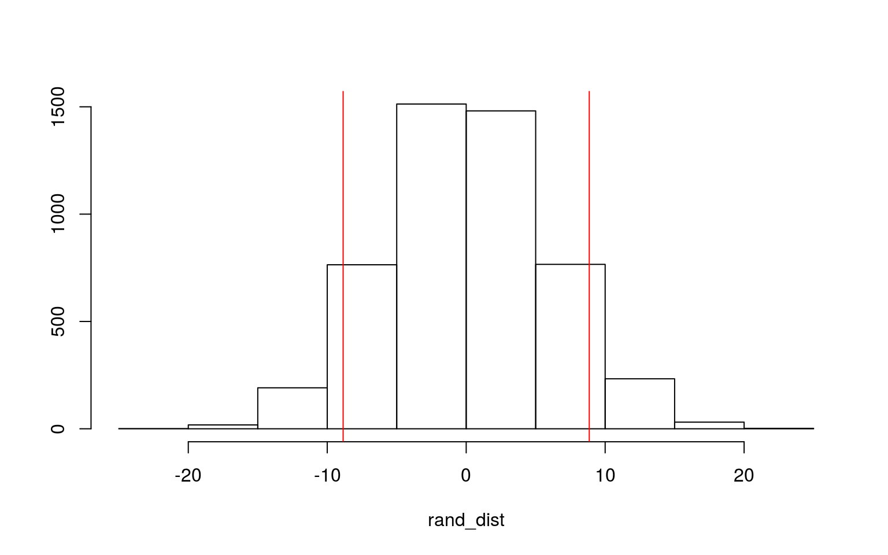

Introduce your dataset and each of your variables (or just your main variables if you have lots) in a paragraph. What are they measuring? How many observations?
My dataset comes from a University of California Irvine dataset that combines heart disease data from around the world, but I am only using the subset of data that comes from Cleveland, which has also been used in machine learning studies. The dataset includes various cardiac health related variables for each patient and whether or not the patient has heart disease (binary). All variables are explained below (after tidying).
Data from: https://www.kaggle.com/ronitf/heart-disease-uci Orignal Study/Info from: https://archive.ics.uci.edu/ml/datasets/Heart+Disease
Variables: age (years) sex (1= Male, 0=Female) cp (chest pain, 4 types; 1: typical angina Value 2: atypical angina Value 3: non-anginal pain Value 4: asymptomatic) bp (resting blood pressure in mmHg upon admission to hospital) chol (serum cholesterol, mg/dL) fbs (fasting blood sugar >120 mg/dL; 1=yes, 0=no) ekg (resting ekg results, 0: normal 1: having ST-T wave abnormality (T wave inversions and/or ST elevation or depression of > 0.05 mV) 2: showing probable or definite left ventricular hypertrophy by Estes’ criteria) maxHR (max heart rate achieved, BPM) exang (exercise induced angina, 1= present, 0= absent) ST (ST depression induced by exercise relative to rest) slope (slope of the peak exercise ST segment, Value 1: upsloping Value 2: flat Value 3: downsloping) ves (number of major vessels (0-3) colored by flouroscopy) heartd (heart disease, 1= yes, 0= no)
#load packages
library(tidyverse)
library(sandwich)
library(lmtest)
#upload data
heart<-read.csv("heart.csv")
heart<-heart%>%rename(bp=trestbps, ekg=restecg, maxHR=thalach, ST=oldpeak, ves=ca, heartd=target)
heart<-heart%>%select(-thal)
#heart$y<-ifelse(heart$heartd==1,1,0)
heart<-heart%>%mutate(y = if_else(heartd == "1", TRUE, FALSE))
#numeric to discrete where needed
heart$sex <- as.factor(heart$sex)
heart$cp <- as.factor(heart$cp)
heart$fbs <- as.factor(heart$fbs)
heart$ekg <- as.factor(heart$ekg)
heart$exang <- as.factor(heart$exang)
heart$slope <- as.factor(heart$slope)
heart$ves <- as.factor(heart$ves)Perform a MANOVA testing whether any of your numeric variables (or a subset of them, if including them all doesn’t make sense) show a mean difference across levels of one of your categorical variables (3). If they do, perform univariate ANOVAs to find response(s) showing a mean difference across groups (3), and perform post-hoc t tests to find which groups differ (3). Discuss the number of tests you have performed, calculate the probability of at least one type I error (if unadjusted), and adjust the significance level accordingly (bonferroni correction) before discussing significant differences (3). Briefly discuss assumptions and whether or not they are likely to have been met (2).
man1<-manova(cbind(bp, maxHR, ST, chol, age)~y, data=heart)
summary(man1)## Df Pillai approx F num Df den Df Pr(>F)
## y 1 0.27846 22.924 5 297 < 2.2e-16 ***
## Residuals 301
## ---
## Signif. codes: 0 '***' 0.001 '**' 0.01 '*' 0.05 '.' 0.1 ' ' 1summary.aov(man1) #get univariate ANOVAs from MANOVA## Response bp :
## Df Sum Sq Mean Sq F value Pr(>F)
## y 1 1951 1951.18 6.4582 0.01155 *
## Residuals 301 90940 302.13
## ---
## Signif. codes: 0 '***' 0.001 '**' 0.01 '*' 0.05 '.' 0.1 ' ' 1
##
## Response maxHR :
## Df Sum Sq Mean Sq F value Pr(>F)
## y 1 28182 28181.6 65.12 1.697e-14 ***
## Residuals 301 130262 432.8
## ---
## Signif. codes: 0 '***' 0.001 '**' 0.01 '*' 0.05 '.' 0.1 ' ' 1
##
## Response ST :
## Df Sum Sq Mean Sq F value Pr(>F)
## y 1 75.52 75.521 68.551 4.085e-15 ***
## Residuals 301 331.60 1.102
## ---
## Signif. codes: 0 '***' 0.001 '**' 0.01 '*' 0.05 '.' 0.1 ' ' 1
##
## Response chol :
## Df Sum Sq Mean Sq F value Pr(>F)
## y 1 5895 5894.7 2.203 0.1388
## Residuals 301 805406 2675.8
##
## Response age :
## Df Sum Sq Mean Sq F value Pr(>F)
## y 1 1266 1266.01 16.117 7.525e-05 ***
## Residuals 301 23644 78.55
## ---
## Signif. codes: 0 '***' 0.001 '**' 0.01 '*' 0.05 '.' 0.1 ' ' 1heart%>%group_by(y)%>%summarize(mean(bp),mean(maxHR), mean(ST), mean(age))## # A tibble: 2 x 5
## y `mean(bp)` `mean(maxHR)` `mean(ST)` `mean(age)`
## <lgl> <dbl> <dbl> <dbl> <dbl>
## 1 FALSE 134. 139. 1.59 56.6
## 2 TRUE 129. 158. 0.583 52.5#pairwise t tests
pairwise.t.test(heart$bp,heart$y, p.adj="none")##
## Pairwise comparisons using t tests with pooled SD
##
## data: heart$bp and heart$y
##
## FALSE
## TRUE 0.012
##
## P value adjustment method: nonepairwise.t.test(heart$maxHR,heart$y, p.adj="none")##
## Pairwise comparisons using t tests with pooled SD
##
## data: heart$maxHR and heart$y
##
## FALSE
## TRUE 1.7e-14
##
## P value adjustment method: nonepairwise.t.test(heart$ST,heart$y, p.adj="none")##
## Pairwise comparisons using t tests with pooled SD
##
## data: heart$ST and heart$y
##
## FALSE
## TRUE 4.1e-15
##
## P value adjustment method: nonepairwise.t.test(heart$age,heart$y, p.adj="none")##
## Pairwise comparisons using t tests with pooled SD
##
## data: heart$age and heart$y
##
## FALSE
## TRUE 7.5e-05
##
## P value adjustment method: noneDid 1 MANOVA, 5 ANOVAs, and 4 t tests (10 tests); alpha = 0.05/10 = 0.005. Three t tests still show significance (maxHR, ST, age) but BP is no longer significant.
#multivariate normality example (1 of 25 possible)
ggplot(heart, aes(x = bp, y = maxHR)) +
geom_point(alpha = .5) + geom_density_2d(h=2) + coord_fixed() + facet_wrap(~y)Due to the academic nature of the study, it is likely that all participants are randomly sampled, and all are independent observations. Each group (y = 1 or 0, or heart disease present/absent) has over 25+ individuals/data points so we can assume multivariate normality of DVs. Just to make sure, I ran a couple of the plots (like the one above, as an example) to make sure they looked normal. We will also assume that covariances are relatively homogenous, and no outliers are evident, so MANOVA can be considered appropriate.
Perform some kind of randomization test on your data (that makes sense). This can be anything you want! State null and alternative hypotheses, perform the test, and interpret the results (7). Create a plot visualizing the null distribution and the test statistic (3).
#H0: Mean cholesterol is the same between those with heart disease and those without.
#HA: Mean cholesterol is different between those with heart disease and those without.
#diff in means
heart%>%group_by(heartd)%>%
summarize(means=mean(chol))%>%summarize(`mean_diff:`=diff(means))## # A tibble: 1 x 1
## `mean_diff:`
## <dbl>
## 1 -8.86#randomization test
rand_dist<-vector()
for(i in 1:5000){
new<-data.frame(chol=sample(heart$chol), heartd=heart$heartd)
rand_dist[i]<-mean(new[new$heartd== 1,]$chol)-
mean(new[new$heartd== 0,]$chol)}
#interpret
mean(rand_dist>8.856653 | rand_dist< -8.856653)## [1] 0.1412t.test(data=heart,chol~heartd)##
## Welch Two Sample t-test
##
## data: chol by heartd
## t = 1.4948, df = 298.03, p-value = 0.136
## alternative hypothesis: true difference in means is not equal to 0
## 95 percent confidence interval:
## -2.803241 20.516548
## sample estimates:
## mean in group 0 mean in group 1
## 251.0870 242.2303#plot
{hist(rand_dist,main="",ylab=""); abline(v = c(-8.856653,8.856653),col="red")} The difference in means between the two groups of patients is 8.857 mg/dL. After running the randomization test, we can see that we get a p value of 0.1374 which is NOT lower than 0.05 so the difference in cholesterol is not significant between those with heart disease and those without. Essentially, both those with and without heart disease they have the same mean cholesterol. To make sure, we ran a Welch’s t-test, and the p is slightly smaller (makes sense because parametric) and pretty much matches/confirms our own p statistic.
Build a linear regression model predicting one of your response variables from at least 2 other variables, including their interaction. Mean-center any numeric variables involved in the interaction.
- Interpret the coefficient estimates (do not discuss significance) (10)
- Plot the regression using `ggplot()`. (8)
- Check assumptions of linearity, normality, and homoskedasticity either graphically or using a hypothesis test (4)
- Regardless, recompute regression results with robust standard errors via `coeftest(..., vcov=vcovHC(...))`.
- Discuss significance of results, including any changes from before/after robust SEs if applicable. (8)
- What proportion of the variation in the outcome does your model explain? (4)#mean centered variables
heart$bp_c <- heart$bp - mean(heart$bp)
heart$maxHR_c <- heart$maxHR - mean(heart$maxHR)
#linear reg model
fit<- lm(age~bp_c*maxHR_c, data = heart)
summary(fit)##
## Call:
## lm(formula = age ~ bp_c * maxHR_c, data = heart)
##
## Residuals:
## Min 1Q Median 3Q Max
## -21.215 -5.646 0.383 5.778 25.557
##
## Coefficients:
## Estimate Std. Error t value Pr(>|t|)
## (Intercept) 54.399601 0.459836 118.302 < 2e-16 ***
## bp_c 0.138163 0.026329 5.248 2.93e-07 ***
## maxHR_c -0.153439 0.020108 -7.631 3.15e-13 ***
## bp_c:maxHR_c 0.001779 0.001183 1.504 0.134
## ---
## Signif. codes: 0 '***' 0.001 '**' 0.01 '*' 0.05 '.' 0.1 ' ' 1
##
## Residual standard error: 7.995 on 299 degrees of freedom
## Multiple R-squared: 0.2328, Adjusted R-squared: 0.2251
## F-statistic: 30.24 on 3 and 299 DF, p-value: < 2.2e-16According to our model, the predicted age for a person of average BP and average Max HR is 54.4 years old. Controlling for max HR (heart rate) for every 1 mmHg(unit) increase in BP from the mean, we expect to see the predicted age increase 0.138 years from the average age. Controlling for BP, every 1 bpm (unit) increase of the max HR from the mean decreases the predicted age by 0.153 years. The slope for BP_c on age is 0.0018 greater for every 1 unit increase of max HR from the mean. As BP increases each mmHg from the mean BP, the effect of an additional bpm of max HR from the mean on age increases by .0018 years. (All disregarding significance)
#plot
ggplot(heart,aes(y=age,x=bp_c,color=maxHR_c))+geom_point()+stat_smooth(method="lm",se=FALSE)#check assumptions
bptest(fit) #H0 = homoskedastic##
## studentized Breusch-Pagan test
##
## data: fit
## BP = 5.6853, df = 3, p-value = 0.128#cannot reject the null (p=0.128), homoskedastic
#robust SE
coeftest(fit, vcov=vcovHC(fit))##
## t test of coefficients:
##
## Estimate Std. Error t value Pr(>|t|)
## (Intercept) 54.3996015 0.4651762 116.9441 < 2.2e-16 ***
## bp_c 0.1381628 0.0251257 5.4989 8.207e-08 ***
## maxHR_c -0.1534391 0.0199657 -7.6851 2.210e-13 ***
## bp_c:maxHR_c 0.0017791 0.0011768 1.5119 0.1316
## ---
## Signif. codes: 0 '***' 0.001 '**' 0.01 '*' 0.05 '.' 0.1 ' ' 1#prop of variation explained by model (R^2 value)
summary(fit)##
## Call:
## lm(formula = age ~ bp_c * maxHR_c, data = heart)
##
## Residuals:
## Min 1Q Median 3Q Max
## -21.215 -5.646 0.383 5.778 25.557
##
## Coefficients:
## Estimate Std. Error t value Pr(>|t|)
## (Intercept) 54.399601 0.459836 118.302 < 2e-16 ***
## bp_c 0.138163 0.026329 5.248 2.93e-07 ***
## maxHR_c -0.153439 0.020108 -7.631 3.15e-13 ***
## bp_c:maxHR_c 0.001779 0.001183 1.504 0.134
## ---
## Signif. codes: 0 '***' 0.001 '**' 0.01 '*' 0.05 '.' 0.1 ' ' 1
##
## Residual standard error: 7.995 on 299 degrees of freedom
## Multiple R-squared: 0.2328, Adjusted R-squared: 0.2251
## F-statistic: 30.24 on 3 and 299 DF, p-value: < 2.2e-16R^2 is the proportion of variation in the response variable explained by the overall model (all predictors at once), which is 0.2328, or 0.2251 if we account for a penalty with each extra explanatory variable.
Rerun same regression model (with interaction), but this time compute bootstrapped standard errors. Discuss any changes you observe in SEs and p-values using these SEs compared to the original SEs and the robust SEs)
#sample
boot_dat<- sample_frac(heart, replace=T)
# repeat 5000 times
samp_distn<-replicate(5000, {
boot_dat <- sample_frac(heart, replace=T) #bootstrap data
fit <- lm(age~bp_c*maxHR_c, data=boot_dat) #fit model
coef(fit) #save coefs
})
#bootstrap SEs
samp_distn %>% t %>% as.data.frame %>% summarize_all(sd)## (Intercept) bp_c maxHR_c bp_c:maxHR_c
## 1 0.4697532 0.02506566 0.01996577 0.001159792#compare
coeftest(fit)[,1:2] #original## Estimate Std. Error
## (Intercept) 54.399601494 0.459835629
## bp_c 0.138162813 0.026328780
## maxHR_c -0.153439077 0.020108241
## bp_c:maxHR_c 0.001779134 0.001183137coeftest(fit, vcov=vcovHC(fit))[,1:2] #robust## Estimate Std. Error
## (Intercept) 54.399601494 0.465176172
## bp_c 0.138162813 0.025125730
## maxHR_c -0.153439077 0.019965741
## bp_c:maxHR_c 0.001779134 0.001176762The bootstrap SEs have the lowest values for the explanatory variables, compared to the original SEs and the robust SEs. The bp_c SE is 0.0245, maxHR_C is 0.0197, and the interaction is 0.0012. All of these explanatory variables SE dropped from both the robust and original. The SE intercept for the bootstrap model was 0.4570, which is also lower than the both other models. Since all of the SE’s dropped for the variables, we have a more confident model, and the p values must be lower in the bootstrap model than those found for both the other 2 models.
Perform a logistic regression predicting a binary categorical variable (if you don’t have one, make/get one) from at least two explanatory variables (interaction not necessary).
#log reg
fit<-glm(y~age+sex+cp+bp+chol+maxHR+ST+ves,data=heart,family=binomial(link="logit"))
coeftest(fit)##
## z test of coefficients:
##
## Estimate Std. Error z value Pr(>|z|)
## (Intercept) 1.1051671 2.3790463 0.4645 0.6422594
## age 0.0199263 0.0232617 0.8566 0.3916581
## sex1 -1.9530001 0.4582663 -4.2617 2.029e-05 ***
## cp1 1.5423103 0.5267125 2.9282 0.0034095 **
## cp2 2.2309472 0.4498139 4.9597 7.060e-07 ***
## cp3 2.4733791 0.6550696 3.7757 0.0001595 ***
## bp -0.0268743 0.0108058 -2.4870 0.0128814 *
## chol -0.0064077 0.0038529 -1.6631 0.0962973 .
## maxHR 0.0327688 0.0105123 3.1172 0.0018257 **
## ST -0.6758097 0.1980799 -3.4118 0.0006453 ***
## ves1 -2.0070404 0.4569533 -4.3922 1.122e-05 ***
## ves2 -2.5005820 0.6412315 -3.8997 9.633e-05 ***
## ves3 -1.9303837 0.8123091 -2.3764 0.0174818 *
## ves4 -0.0858990 1.3986025 -0.0614 0.9510265
## ---
## Signif. codes: 0 '***' 0.001 '**' 0.01 '*' 0.05 '.' 0.1 ' ' 1exp(coef(fit))## (Intercept) age sex1 cp1 cp2 cp3
## 3.01972898 1.02012615 0.14184787 4.67537930 9.30867940 11.86246404
## bp chol maxHR ST ves1 ves2
## 0.97348360 0.99361276 1.03331165 0.50874431 0.13438581 0.08203724
## ves3 ves4
## 0.14509252 0.91768691Interpretation: Everything except age and ves4 have a significant impact on whether a patient has heart disease. Controlling for everything else (age, cp1-3, bp, chol, maxHR, ST, ves1-4), odds of heart disease for a male is 0.14 times the odds of a woman. Controlling for everything else (too long to list, see above), odds of heart disease for those with chest pain type 1 is 4.68 times the odds of someone with no chest pain (cp4). Controlling for everything else, odds of heart disease for those with chest pain type 2 is 9.31x times the odds of someone with no chest pain (cp4). Controlling for everything else, odds of heart disease for those with chest pain type 3 is 11.86x times the odds of someone with no chest pain (cp4). Controlling for everything else, for every 1 unit increase of BP, the odds of having heart disease decrease by a factor of 0.97. Controlling for everything else, for every 1 unit increase of cholesterol, the odds of having heart disease decrease by a factor of 0.99. Controlling for everything else, for every 1 unit increase of max HR, the odds of having heart disease increase by a factor of 1.03. Controlling for everything else, for every 1 unit increase of ST, the odds of having heart disease decrease by a factor of 0.51. Observing 1, 2, or 3 major vesicles all significantly decrease the odds of getting heart disease, seeing no vesicles (ves4) is insignificant and doesn’t strongly affect the prediction of heart disease. Age as well doesn’t significantly impact whether someone is predicted to have heart disease.
#conf matrix
tdat<-heart%>%mutate(prob=predict(fit, type="response"), prediction=ifelse(prob>.5,1,0))
classify<-tdat%>%transmute(prob,prediction,truth=heartd)
table(prediction=classify$prediction,truth=classify$truth)%>%addmargins()## truth
## prediction 0 1 Sum
## 0 110 19 129
## 1 28 146 174
## Sum 138 165 303#function for classification diagnostics
prob=predict(fit, type="response")
class_diag <- function(probs,truth){
#CONFUSION MATRIX: CALCULATE ACCURACY, TPR, TNR, PPV
tab<-table(factor(probs>.5,levels=c("FALSE","TRUE")),truth)
acc=sum(diag(tab))/sum(tab)
sens=tab[2,2]/colSums(tab)[2]
spec=tab[1,1]/colSums(tab)[1]
ppv=tab[2,2]/rowSums(tab)[2]
if(is.numeric(truth)==FALSE & is.logical(truth)==FALSE) truth<-as.numeric(truth)-1
#CALCULATE EXACT AUC
ord<-order(probs, decreasing=TRUE)
probs <- probs[ord]; truth <- truth[ord]
TPR=cumsum(truth)/max(1,sum(truth))
FPR=cumsum(!truth)/max(1,sum(!truth))
dup<-c(probs[-1]>=probs[-length(probs)], FALSE)
TPR<-c(0,TPR[!dup],1); FPR<-c(0,FPR[!dup],1)
n <- length(TPR)
auc<- sum( ((TPR[-1]+TPR[-n])/2) * (FPR[-1]-FPR[-n]) )
data.frame(acc,sens,spec,ppv,auc)
}
#results
class_diag(prob, heart$y)## acc sens spec ppv auc
## TRUE 0.8448845 0.8848485 0.7971014 0.8390805 0.923935#ggplot
heart$logit<-predict(fit,type="link") #get predicted logit scores (logodds)
heart%>%ggplot()+geom_density(aes(logit,color=y,fill=y), alpha=.4)+
theme(legend.position=c(.85,.85))+geom_vline(xintercept=0)+xlab("logit (log-odds)")+
geom_rug(aes(logit,color=y))#ROC and AUC
library(plotROC)
prob<-predict(fit,type="response")
ROCplot<-ggplot(heart)+geom_roc(aes(d=y,m=prob), n.cuts=0)
ROCplotcalc_auc(ROCplot)## PANEL group AUC
## 1 1 -1 0.923935The ROC is pretty good, the shape is a near right angle, so we are predicting really well and are close to a TPR of 1 and FPR of 0, with good sensitivity and specificity. The area under the curve is 0.92, so on average, 92% of the time we are correctly predicting someone with heart disease to have it. This is considered a ‘Great’ AUC. It is also the probability that a randomly selected person with heart disease has a higher predicted probability than a randomly selected person without heart disease.
#CV
set.seed(1234)
k=10 #choose number of folds
data<-heart[sample(nrow(heart)),] #randomly order rows
folds<-cut(seq(1:nrow(heart)),breaks=k,labels=F) #create folds
diags<-NULL
for(i in 1:k){
## Create training and test sets
train<-data[folds!=i,]
test<-data[folds==i,]
truth<-test$y ## Truth labels for fold i
## Train model on training set (all but fold i)
fit<-glm(y~age+sex+cp+bp+chol+maxHR+ST+ves,data=train,family="binomial")
## Test model on test set (fold i)
probs<-predict(fit,newdata = test,type="response")
## Get diagnostics for fold i
diags<-rbind(diags,class_diag(probs,truth))
}
summarize_all(diags,mean) #average diagnostics across all k folds, out-of-sample## acc sens spec ppv auc
## 1 0.8086022 0.8339523 0.7484256 0.8120178 0.8926508Choose one variable you want to predict (can be one you used from before; either binary or continuous) and run a LASSO regression inputting all the rest of your variables as predictors. Choose lambda to give the simplest model whose accuracy is near that of the best (i.e., lambda.1se). Discuss which variables are retained. Perform 10-fold CV using this model: if response in binary, compare model’s out-of-sample accuracy to that of your logistic regression in part 5; if response is numeric, compare the residual standard error (at the bottom of the summary output, aka RMSE): lower is better fit!
#drop heartd col b/c exact same thing as y; drop other later created variables
heart1<- heart%>%select(-heartd, -bp_c, -maxHR_c, -logit)
library(glmnet)
y<-as.matrix(heart1$y) #grab response
x<-model.matrix(y~.,data=heart1)[,-1] #grab predictors
head(x)## age sex1 cp1 cp2 cp3 bp chol fbs1 ekg1 ekg2 maxHR exang1 ST slope1 slope2
## 1 63 1 0 0 1 145 233 1 0 0 150 0 2.3 0 0
## 2 37 1 0 1 0 130 250 0 1 0 187 0 3.5 0 0
## 3 41 0 1 0 0 130 204 0 0 0 172 0 1.4 0 1
## 4 56 1 1 0 0 120 236 0 1 0 178 0 0.8 0 1
## 5 57 0 0 0 0 120 354 0 1 0 163 1 0.6 0 1
## 6 57 1 0 0 0 140 192 0 1 0 148 0 0.4 1 0
## ves1 ves2 ves3 ves4
## 1 0 0 0 0
## 2 0 0 0 0
## 3 0 0 0 0
## 4 0 0 0 0
## 5 0 0 0 0
## 6 0 0 0 0x<-scale(x) #standardize
cv<-cv.glmnet(x,y,family="binomial")
lasso<-glmnet(x,y,family="binomial",lambda=cv$lambda.1se)
coef(lasso)## 20 x 1 sparse Matrix of class "dgCMatrix"
## s0
## (Intercept) 0.19528795
## age .
## sex1 -0.44937340
## cp1 0.15575969
## cp2 0.42052840
## cp3 0.18269599
## bp -0.08296124
## chol .
## fbs1 .
## ekg1 0.01547361
## ekg2 .
## maxHR 0.25995451
## exang1 -0.35696459
## ST -0.39284479
## slope1 -0.23079956
## slope2 0.11461920
## ves1 -0.41838623
## ves2 -0.45872376
## ves3 -0.24655630
## ves4 .#CV 10-fold
set.seed(1234)
k=10
data <- heart1 %>% sample_frac #put rows of dataset in random order
folds <- ntile(1:nrow(data),n=10) #create fold labels
diags<-NULL
for(i in 1:k){
train <- data[folds!=i,] #create training set (all but fold i)
test <- data[folds==i,] #create test set (just fold i)
truth <- test$y #save truth labels from fold i
fit <- glm(y~sex+cp+bp+ekg+maxHR+exang+ST+slope+ves,
data=train, family="binomial")
probs <- predict(fit, newdata=test, type="response")
diags<-rbind(diags,class_diag(probs,truth))
}
diags%>%summarize_all(mean)## acc sens spec ppv auc
## 1 0.8446237 0.8664513 0.7996044 0.845208 0.8948103From our LASSO, we can see that being male (sex = 1), any type of chest pain (cp types 1-3, cp 4 is no angina), blood pressure (bp), an EKG with ST wave abnormality (ekg1), max heart rate (maxHR), presence of exercise induced angina (exang1), ST depression following exercise, upsloping or flat slope of peak exercise ST segment (slope 1 & 2), and any number of major vessels colored by fluoroscopy (greater than 0, ves 1-3, ves 4 is not known, so makes sense it doesn’t matter) are the most predictive variables. All of the discussed variables are retained, the rest with “.” are dropped. These are actually exciting results because these variables listed are clinically known to be related to heart disease, and what would be expected to be predictive from a clinical perspective! The AUC is 0.893 which is considered pretty good for predicting presence of heart disease. The accuracy for the LASSO model is 0.855, compared to the model from part 5 which was 0.822, so this model is more accurate.